The feel
Body horror plays on what Philip Brophy called "the fear of one's own body, of how one controls and relates to it".1 The BFI sums the subgenre up as aberration, mutation, transformation and a loss of conscious control over the human body.2 The surreal branch spreads that fear into the world around the body: in Scorn a hallway is a ribbed oesophagus and a door is a toothy maw, and its director, Ljubomir Peklar, says his interest is "the relation between a man and an object, how one changes the other".3
It works because the body stays recognisable. Masahiro Mori proposed that our response to a humanlike figure flips from empathy to revulsion as it comes close to lifelike without getting there, and that movement makes the drop steeper.4 Gore is optional: the only blood in We're All Going to the World's Fair comes from a pricked finger,2 and Scorn's director wanted it to get under the player's skin "very slowly" instead of relying on jump scares.5
- soured
- wet
- breathing
- attached
- patient
- too close
Where it comes from
The term body horror goes back to a 1983 essay by the Australian academic Philip Brophy.2 In "Horrality" he called David Cronenberg a director who "almost exclusively works in this field", and said The Thing (1982) took the body horror begun in Alien (1979) "to its logical limit".1 Cronenberg's early films included Shivers (1975), about an engineered parasite, and The Fly (1986), in which a scientist gradually turns into a giant insect.6 In Japan, Tetsuo: The Iron Man (1989) turned a salaryman into a living heap of scrap metal, in a way that recalls one of the final scenes of Akira (1988).7 In games, the Silent Hill 2 team agreed its monsters should look like "soured flesh" and named Francis Bacon and Cronenberg among its influences,8 and Ebb Software's Scorn draws largely on the painters H. R. Giger and Zdzisław Beksiński.3,9
Core elements
Objects built from anatomy
Walls, doors and tools are made of anatomy. In Scorn a door is a toothy maw, a pillar looks carved from muscle and bone, and even the gun is a living weapon,3 while buttons and switches seem to have grown out of the walls around them.10
Near-human figures
Keep the body close enough to human to recognise. Mori's example is a prosthetic hand that looks real at first, then feels eerie once you realise it is artificial.4 Little Nightmares stretches, twists and distorts its adults, and the Janitor is remembered for his long, spindly arms.11
Wet, translucent flesh
Flesh should look slick and soft. Scorn is covered in glistening ooze and has a very moist, squishy look,10 and skin, milk and wax get their soft appearance from light scattering just below the surface.12
Symbolic distortions
Every distortion should mean something. Tarsier's Dave Mervik talks about meeting people "whose inner life has shaped their outer form",13 and Masahiro Ito gave two Silent Hill 2 creatures prominent mouths to stand for Mary's verbal abuse of James.14
Concealment and suggestion
What you don't see does more work. In Little Nightmares a pair of arms reaches through a wall without the body they belong to, and the chefs wear masks, so players imagine something worse than the graphics could show.13 Scorn's director points to the opening of Suspiria, where "nothing truly graphic is happening".5
Slow pulsing motion
Let the flesh move, but slowly. In Scorn everything seethes and pulses "as if driven by an alien heartbeat".10 Mori notes that movement deepens the uncanny, and that a robot's smile slowed to half speed looked creepy instead of happy.4
How to do it
Start from a theme
Decide what the body stands for before you draw it. Scorn's director says its themes and ideas shaped the art style, not the other way round.9 Masahiro Ito based the mouths of Flesh Lip and Mandarin on Mary's verbal abuse of James, and on the mouth of the figure in the centre panel of Francis Bacon's Second Version of Triptych 1944.14
Exaggerate studies of real anatomy
For Silent Hill 2's human characters, Takayoshi Sato's team made plenty of quick sketches of faces to catch the motion of musculature, and drew profiles from all angles to learn the shapes of the skulls.8 Then exaggerate: Tarsier stretch and bloat their adults to show how big and frightening the world looks to a child.13
Block out models in first person
Scorn turns each concept into a basic model with simple rigging and checks it from the first-person view, adjusting it until it matches the drawing. Only then does the team build the detailed high-poly model and hand it to animation and VFX.9 Takayoshi Sato put Silent Hill 2's character models at about 6,000 polygons each.8
Set up subsurface scattering
Treat subsurface scattering as on or off, either fully diffuse or fully subsurface, rather than a partial blend, and set the scattering distance separately for the red, green and blue channels, with red deepest, as in skin.12 Paint a mask from 0, no scattering, to 1, full scattering, to control where it is stronger or weaker. Light-coloured human skin scatters visibly over about 1.2 cm.15
Add a wet film
Scorn's surfaces are covered in glistening ooze.10 For a film like that, add a glossy coat layer on top of the base: texture its amount to vary the coating across the surface, and give it its own normals to lay a smooth coat over rough flesh.12
Animate a slow pulse
Give walls and bodies a pulse, as Scorn does.10 Then slow human motions down: in Mori's example, a robot's smile played at half speed looked creepy instead of happy.4
Tell the story through environments
Scorn has no conventional plot or even language, so its environments carry the story.5 Little Nightmares has no dialogue or text either,13 and Tarsier let players meet each character only when they want them to.11
Cheat sheet
- Palette
- Mostly greens and browns, as in Scorn10
- Subsurface weight
- 0 or 1, fully diffuse or fully subsurface12
- Subsurface radius
- Set per RGB channel, red deepest for skin12
- Skin scatter distance
- About 1.2 cm for light-coloured skin15
- Character model
- About 6,000 polygons in Silent Hill 28
- Frame rate
- 60 fps, which Scorn's team called imperative5
- Motion
- Human motion at half speed reads as creepy4
Do
- Give every distortion a reason in the story or the character's mind.14,13
- Keep the body familiar. Scorn's director says showing how a man and an object change each other needs familiarity.3
- Apply the same rules to weapons, doors and puzzles as to the creatures.9
- Build dread slowly and let mood and atmosphere do the work.5
- Leave room for the player's imagination: show the arms, hide the creature.13
Avoid
- Big teeth, big eyes and bugs. Scorn's director found that this is what artists drew once they ran out of ideas.3
- Weird for the sake of weird. Peklar's complaint is that most people think it just needs to be weird.3
- A straight Giger homage. Giger's biomechanical horror has its own page, and Scorn's director says its style was chosen to carry the game's themes, not as a mere homage.9,5
- Cheap jump scares. Peklar sums up most horror games as loud sounds and spooky ghost children.5
- Explaining the monster. Tarsier's Dave Mervik says there is nothing worse than the creator coming out to say what it means.11
Tools and tutorials
- Blender sculpting manual
Sculpt mode, brushes and dynamic topology.
- Principled BSDF
Blender's manual on subsurface weight, radius and roughness.
- Subsurface Profile shading model
How Unreal Engine handles skin.
- Making Body-Horror in Blender in 2 Minutes
A quick way into sculpting something unpleasant.
- Blender Subsurface Scattering Tutorial
Twelve minutes on getting light to sink into a surface.
Palette
Sampled from Akira, Beksiński, Scorn, Silent Hill 2 and Bosch. Press a cell to copy its colour.
Feel the vibe
In motion
Listen
From Silent Hill 2. A sad, slow guitar where you expect a scare, and that restraint is the whole lesson.
YouTubeFrom The Thing, 1982. A low, steady pulse with almost nothing else on top of it.
YouTubeFrom his dark ambient suite on Scorn's soundtrack. Fan upload.
YouTubeClattering metal percussion from Tetsuo: The Iron Man.7 Flesh turning into machine, as a rhythm.
YouTubeThe official upload from Wrong Organ. Stale, sick and cheerful, like the ship.
YouTube
More references
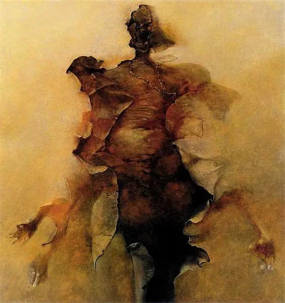
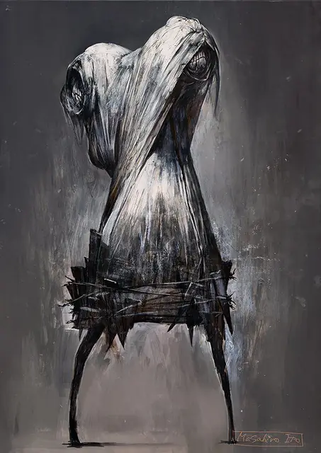
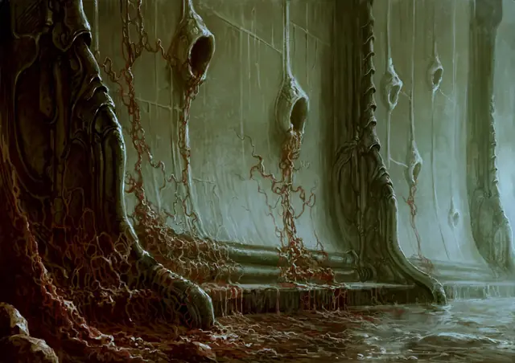
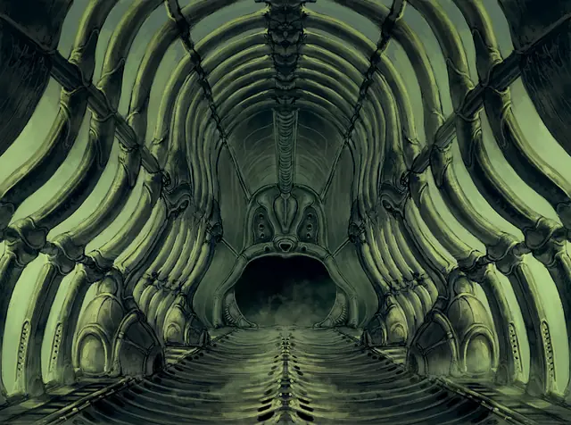
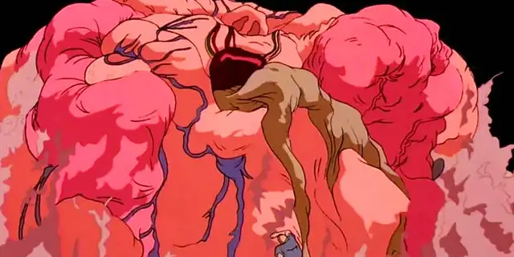
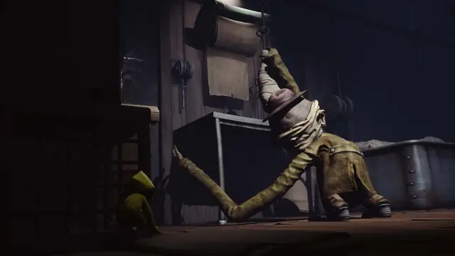
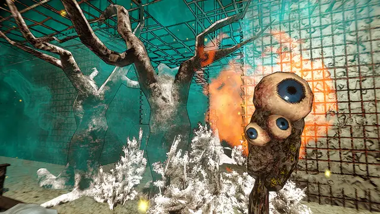
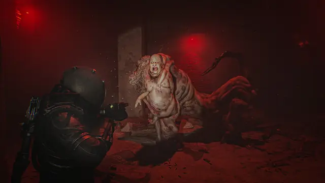
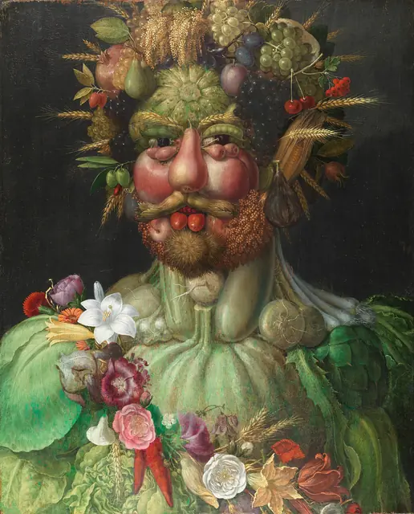
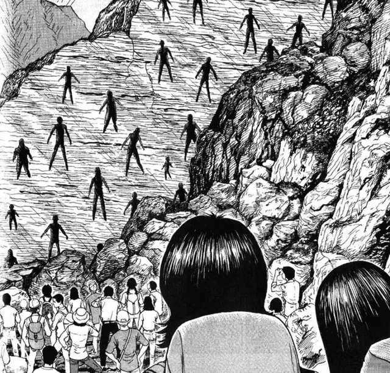
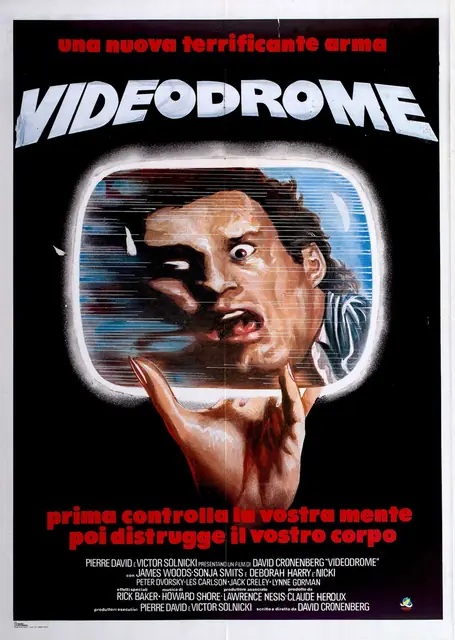
Games
- Silent Hill 2
The team agreed its monsters should look like "soured flesh".8 Study how little you actually get to see.
- Dead Space
Its Necromorphs are people broken and twisted into something else: bone shards instead of teeth, limbs bent back and stretched instead of wings.16
- The Binding of Isaac
Cartoon body horror, and proof you don't need realism for this to work.
- Little Nightmares
Adults stretched and bloated the way a child might see them.13 Study the Janitor's long, spindly arms.11
- Scorn
Walls, doors and weapons made of anatomy, with no conventional plot or language.3,5 Study its materials.
- Golden Light
Low-poly flesh with garish colours and bad jokes.
Film, art and more
- The Garden of Earthly Delights
Hieronymus Bosch's Hell panel. A visual parallel more than five centuries early. Look at the Tree-Man.
- Vertumnus
Giuseppe Arcimboldo's emperor made of produce. Bodies out of objects, played for wit.
- Francis Bacon
Smeared, cornered figures. Silent Hill 2's artists named him as an influence,8 and Masahiro Ito based two creatures' mouths on his Second Version of Triptych 1944.14
- Zdzisław Beksiński
Dusty, ruined bodies in amber light. Scorn's director singles out his decaying structures.9
- The Thing
John Carpenter's film. Brophy singled out a severed head that sprouts insect legs and walks out of the room.1
- The Fly
Cronenberg's scientist turns into an insect gradually.6 Study the pacing of it.
- Akira
Katsuhiro Otomo's film. Watch how a body is overtaken in its final scenes.7
- The Enigma of Amigara Fault
Junji Ito's human-shaped holes in a cliff. Study how a shape alone can stand in for a body.
Sources
- 1Horrality: The Textuality of the Contemporary Horror Film
- 210 great body horror films
- 3Behind the beautifully grotesque art of Scorn
- 4The Uncanny Valley: The Original Essay by Masahiro Mori
- 5Scorn game director Ljubomir Peklar talks sexual imagery & "weird organic structures"
- 6David Cronenberg
- 75 reasons to watch cyberpunk body-horror Tetsuo: The Iron Man – 30th anniversary
- 8Interview with Silent Hill 2's Artist Takayoshi Sato
- 9Creating the Unreal dystopian surrealism and biomechanical horrors of Scorn
- 10Scorn is the squishiest game I have ever played and I am all for it
- 11Ahead of Little Nightmares 2, Tarsier Studios reveals the stories and secrets behind its most monstrous creations
- 12Principled BSDF
- 13Crafting the bizarre, off-kilter gameworld of Little Nightmares
- 14Silent Hill 2 Flesh Lip and Mandarin Enemies Inspiration Explained
- 15Subsurface Profile Shading Model
- 16Dead Space 2: The Evolution Of A Necromorph